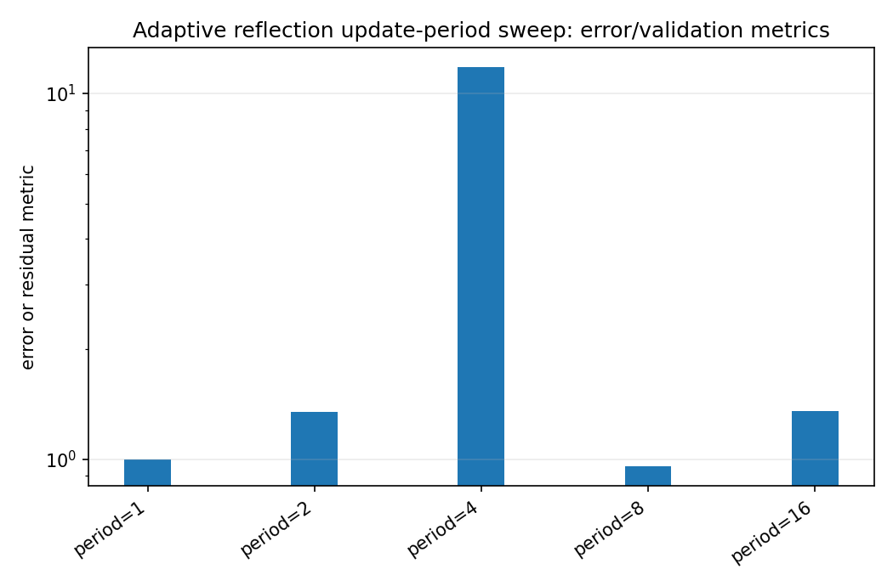
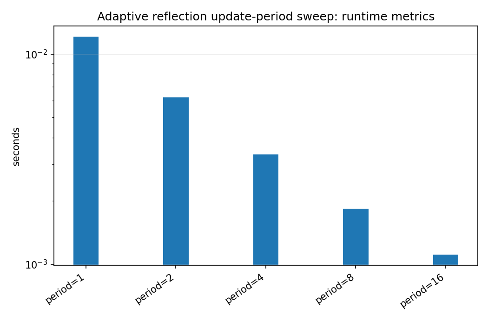
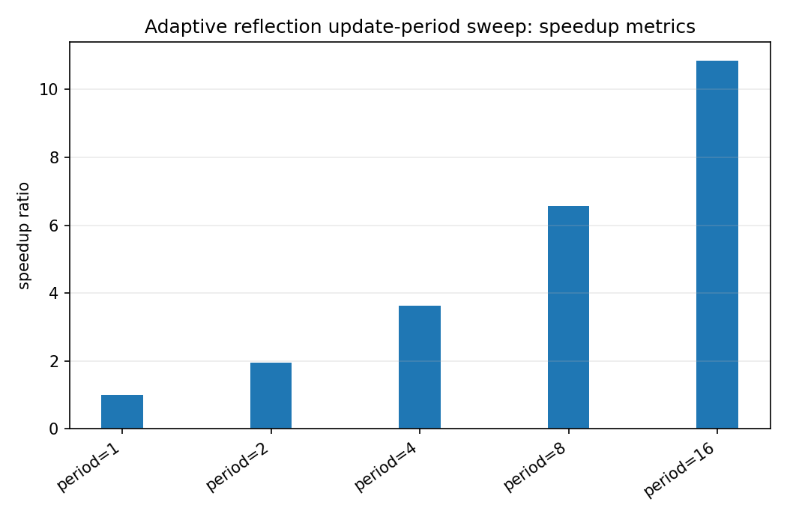

Adaptive reflection update-period sweep¶
Tutorial goal
Measure speed/quality effects of updating reflection coefficients less often.
Note
New to the terminology? See the lattice DSP concept map and the causality/data-use guide for how online, offline, block, and MIMO examples should be read.
Context¶
Adaptive IIR models can save work by updating denominator/reflection coefficients less frequently than numerator taps. The benchmark sweeps the update period and writes both JSON and CSV outputs.
Key idea and equations¶
Larger update periods reduce update count. The question is whether tail MSE remains close to the period-1 baseline.
How to read the result¶
Look for the largest period with a good speedup and modest tail-MSE degradation.
Run command¶
python benchmarks/adaptive_period_sweep.py --periods 1 2 4 8 16 --samples 12000 --repeats 3 --output docs/benchmarks/generated/_artifacts/adaptive_period_sweep/adaptive-period-sweep.json --csv-output docs/benchmarks/generated/_artifacts/adaptive_period_sweep/adaptive-period-sweep.csv
Run status¶
Return code: 0
Visual and data readout¶
When the benchmark gallery is built with results, this page embeds PNG summaries generated from the same JSON/CSV artifacts. The raw data stay available below as downloads so exact numbers remain reproducible without making the public page read like console output.
Figures¶
{kind=link}

adaptive_period_sweep_error_summary.png¶
{kind=link}

adaptive_period_sweep_runtime_summary.png¶
{kind=link}

adaptive_period_sweep_speedup_summary.png¶
Generated data files¶
Source code¶
1"""Sweep adaptive reflection-update periods and record speed/quality trade-offs.
2
3The adaptive IIR update has two different costs:
4
5* numerator/ladder updates, which are cheap and can run every sample; and
6* reflection/denominator updates, which are more expensive and often noisier.
7
8By default, the script enables period-scaled reflection steps so period K uses
9``mu_reflection * K`` on update samples. This makes the speed/quality comparison
10fairer than giving long periods K-times fewer effective denominator updates.
11
12This script evaluates that trade-off by running the same identification problem
13with several ``reflection_update_period`` values. It reports runtime plus MSE
14and coefficient-error metrics, then writes JSON and optional CSV output.
15
16Example
17-------
18python benchmarks/adaptive_period_sweep.py --periods 1 2 4 8 16 32 \
19 --samples 20000 --repeats 5 --output adaptive-period-sweep.json
20"""
21
22from __future__ import annotations
23
24import argparse
25import csv
26import json
27import platform
28import statistics
29import time
30from pathlib import Path
31
32import numpy as np
33
34from lattice_dsp import AdaptiveLatticeLadderNLMS, HAS_OPENMP, LatticeIIR
35
36
37def parse_periods(values: list[str]) -> list[int]:
38 """Parse period CLI values, accepting either space- or comma-separated input."""
39 periods: list[int] = []
40 for value in values:
41 for token in value.split(","):
42 token = token.strip()
43 if not token:
44 continue
45 period = int(token)
46 if period <= 0:
47 raise ValueError("reflection update periods must be positive")
48 periods.append(period)
49 if not periods:
50 raise ValueError("at least one period is required")
51 # Preserve order while removing duplicates.
52 return list(dict.fromkeys(periods))
53
54
55def mse(x: np.ndarray) -> float:
56 return float(np.mean(np.square(x)))
57
58
59def run_trial(
60 period: int,
61 x: np.ndarray,
62 desired: np.ndarray,
63 target_reflection: np.ndarray,
64 target_taps: np.ndarray,
65 *,
66 mu_taps: float,
67 mu_reflection: float,
68 epsilon: float,
69 margin: float,
70 tail: int,
71 scale_reflection_mu_by_period: bool,
72) -> tuple[float, dict[str, float]]:
73 adaptive = AdaptiveLatticeLadderNLMS(
74 [0.0] * int(target_reflection.size),
75 [0.0] * int(target_taps.size),
76 mu_taps=mu_taps,
77 mu_reflection=mu_reflection,
78 epsilon=epsilon,
79 margin=margin,
80 freeze_reflection=False,
81 gradient_mode="analytic",
82 reflection_update_period=period,
83 scale_reflection_mu_by_period=scale_reflection_mu_by_period,
84 )
85
86 start = time.perf_counter()
87 y, err = adaptive.process_adapt(x, desired)
88 elapsed = time.perf_counter() - start
89
90 err = np.asarray(err, dtype=np.float64)
91 y = np.asarray(y, dtype=np.float64)
92 final_reflection = np.asarray(adaptive.reflection, dtype=np.float64)
93 final_taps = np.asarray(adaptive.taps, dtype=np.float64)
94 tail_n = min(tail, err.size)
95
96 quality = {
97 "mse_total": mse(err),
98 "mse_head": mse(err[:tail_n]),
99 "mse_tail": mse(err[-tail_n:]),
100 "output_power": mse(y),
101 "reflection_l2_error": float(np.linalg.norm(final_reflection - target_reflection)),
102 "taps_l2_error": float(np.linalg.norm(final_taps - target_taps)),
103 "max_abs_reflection": float(np.max(np.abs(final_reflection))) if final_reflection.size else 0.0,
104 "stability_margin": float(1.0 - np.max(np.abs(final_reflection))) if final_reflection.size else 1.0,
105 }
106 return elapsed, quality
107
108
109def sweep(args: argparse.Namespace) -> dict[str, object]:
110 periods = parse_periods(args.periods)
111 rng = np.random.default_rng(args.seed)
112 x = rng.normal(size=args.samples).astype(np.float64)
113
114 target_reflection = np.asarray(args.target_reflection, dtype=np.float64)
115 target_taps = np.asarray(args.target_taps, dtype=np.float64)
116 target = LatticeIIR(target_reflection.tolist(), target_taps.tolist())
117 desired = np.asarray(target.process(x), dtype=np.float64)
118 if args.noise_std > 0.0:
119 desired = desired + rng.normal(scale=args.noise_std, size=desired.shape)
120
121 rows: list[dict[str, object]] = []
122 baseline_median: float | None = None
123 baseline_tail_mse: float | None = None
124
125 for period in periods:
126 timings: list[float] = []
127 quality: dict[str, float] | None = None
128 for _ in range(args.repeats):
129 elapsed, quality = run_trial(
130 period,
131 x,
132 desired,
133 target_reflection,
134 target_taps,
135 mu_taps=args.mu_taps,
136 mu_reflection=args.mu_reflection,
137 epsilon=args.epsilon,
138 margin=args.margin,
139 tail=args.tail,
140 scale_reflection_mu_by_period=args.scale_reflection_mu_by_period,
141 )
142 timings.append(elapsed)
143 assert quality is not None
144 median_s = statistics.median(timings)
145 if baseline_median is None:
146 baseline_median = median_s
147 baseline_tail_mse = quality["mse_tail"]
148
149 row: dict[str, object] = {
150 "reflection_update_period": period,
151 "min_s": min(timings),
152 "median_s": median_s,
153 "max_s": max(timings),
154 "speedup_vs_first_period": (baseline_median / median_s) if median_s > 0.0 else None,
155 **quality,
156 "tail_mse_ratio_vs_first_period": (
157 quality["mse_tail"] / baseline_tail_mse if baseline_tail_mse and baseline_tail_mse > 0.0 else None
158 ),
159 }
160 rows.append(row)
161
162 return {
163 "metadata": {
164 "python": platform.python_version(),
165 "platform": platform.platform(),
166 "has_openmp": HAS_OPENMP,
167 "samples": args.samples,
168 "repeats": args.repeats,
169 "seed": args.seed,
170 "periods": periods,
171 "mu_taps": args.mu_taps,
172 "mu_reflection": args.mu_reflection,
173 "scale_reflection_mu_by_period": args.scale_reflection_mu_by_period,
174 "epsilon": args.epsilon,
175 "margin": args.margin,
176 "noise_std": args.noise_std,
177 "tail": min(args.tail, args.samples),
178 "target_reflection": target_reflection.tolist(),
179 "target_taps": target_taps.tolist(),
180 },
181 "results": rows,
182 }
183
184
185def write_csv(path: Path, results: dict[str, object]) -> None:
186 rows = results["results"]
187 if not isinstance(rows, list) or not rows:
188 return
189 path.parent.mkdir(parents=True, exist_ok=True)
190 with path.open("w", newline="", encoding="utf-8") as f:
191 writer = csv.DictWriter(f, fieldnames=list(rows[0].keys()))
192 writer.writeheader()
193 writer.writerows(rows) # type: ignore[arg-type]
194
195
196def main() -> None:
197 parser = argparse.ArgumentParser(description=__doc__)
198 parser.add_argument("--periods", nargs="+", default=["1", "2", "4", "8", "16", "32"])
199 parser.add_argument("--samples", type=int, default=20_000)
200 parser.add_argument("--repeats", type=int, default=5)
201 parser.add_argument("--seed", type=int, default=1234)
202 parser.add_argument("--tail", type=int, default=2_000)
203 parser.add_argument("--mu-taps", type=float, default=0.05)
204 parser.add_argument("--mu-reflection", type=float, default=0.001)
205 parser.add_argument(
206 "--no-scale-reflection-mu-by-period",
207 dest="scale_reflection_mu_by_period",
208 action="store_false",
209 help="Disable period scaling and keep the same raw mu_reflection for every update period.",
210 )
211 parser.set_defaults(scale_reflection_mu_by_period=True)
212 parser.add_argument("--epsilon", type=float, default=1e-8)
213 parser.add_argument("--margin", type=float, default=1e-4)
214 parser.add_argument("--noise-std", type=float, default=0.0)
215 parser.add_argument("--target-reflection", nargs="+", type=float, default=[0.35, -0.25, 0.15, -0.08])
216 parser.add_argument("--target-taps", nargs="+", type=float, default=[0.2, -0.1, 0.05, 0.0, 0.75])
217 parser.add_argument("--output", type=Path, default=Path("reports/adaptive-period-sweep.json"))
218 parser.add_argument("--csv-output", type=Path, default=None)
219 args = parser.parse_args()
220
221 if args.samples <= 0 or args.repeats <= 0 or args.tail <= 0:
222 raise SystemExit("samples, repeats, and tail must all be positive")
223 if len(args.target_taps) != len(args.target_reflection) + 1:
224 raise SystemExit("target-taps must have length len(target-reflection) + 1")
225 if args.noise_std < 0.0:
226 raise SystemExit("noise-std must be non-negative")
227
228 results = sweep(args)
229 args.output.parent.mkdir(parents=True, exist_ok=True)
230 args.output.write_text(json.dumps(results, indent=2, sort_keys=True) + "\n", encoding="utf-8")
231 print(json.dumps(results, indent=2, sort_keys=True))
232 print(f"\nWrote {args.output}")
233 if args.csv_output is not None:
234 write_csv(args.csv_output, results)
235 print(f"Wrote {args.csv_output}")
236
237
238if __name__ == "__main__":
239 main()